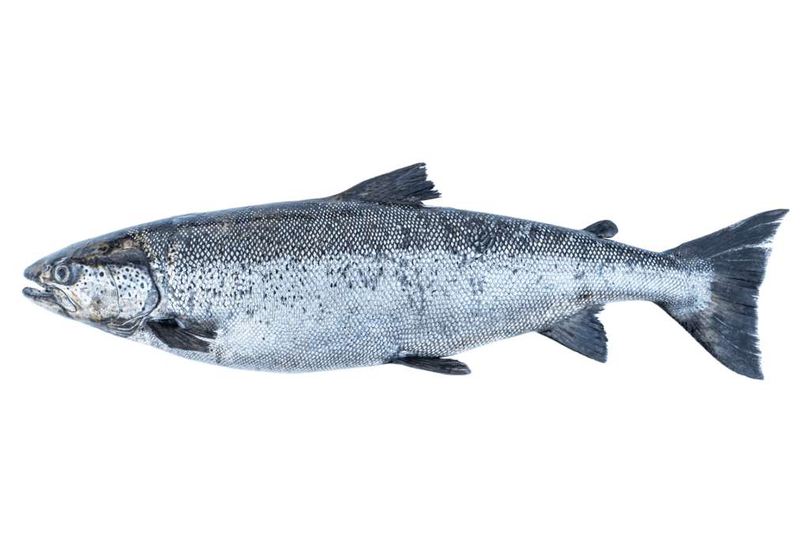

| Espèce |
Saumon |
|

|
| Numéro de Lot |
20241015-AB12 |
| Date et Heure de Capture |
2024-10-15T08:30:00Z |
| Coordonnées GPS |
45.678, -23.456 |
| Lieu de Pêche |
Atlantique Nord |
| Fournisseur |
Navire Océan II - Compagnie Maritime XYZ |
| Méthode de Pêche |
Pêche durable |
| Certification |
MSC |

|
| Qualité |
Frais |
| Tests de Qualité |
pH: 6.5, Température de Traitement: 2°C |
| Conservation |
Température: 0-4°C, Durée Transport: 48 heures |
| Méthode de Transformation |
Congélation à bord |
| Conditionnement |
Type: Boîte recyclable, Poids: 500g |
| Date Limite de Consommation |
20 octobre 2024 |